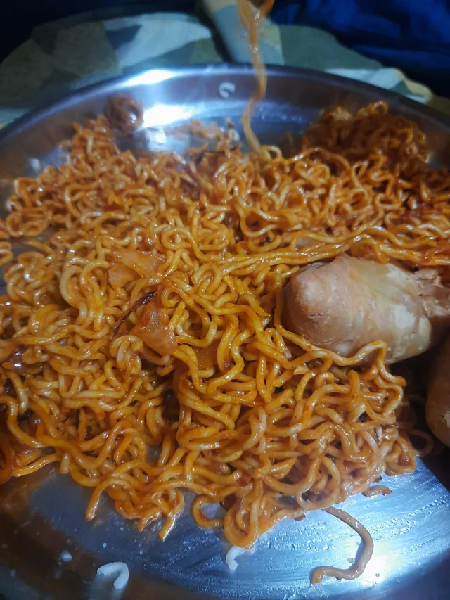

My Recipies
 Chicken Masala
Chicken Masala

Schezwan Maggi Masala Egg Bhurji
Masala Egg Bhurji
 Spicy Jaljeera
Spicy Jaljeera
 Paneer Butter Masala
Paneer Butter Masala
 Masala Dal Fry
Masala Dal Fry
Backstory of my Recipes.
I really have lots of memories with my recipes. Unfortunately I cant share all of them here. But here are some of my favorites.
| Recipe Name | Backstory | Original By |
|---|---|---|
| Chicken Masala | I learned this recipe from my mother. It's a family favorite. | Chef Mummy |
| Schezwan Maggi | My only relief in my last hostel's difficult days. My friend taught me this recipe. | Chef Debasis |
| Masala Egg Bhurji | My Original Recipe, I just tried random spices. It turned out Great. | Chef Bishesh |
| Spicy Jaljeera | A family favorite, Usually made during summer. My father's favorite as it is his recipe. | Chef Papa |
| Paneer Butter Masala | Another banger recipe from my mother. My favorite out of any other recipe. | Chef Mummy |
| Masala Dal Fry | Used it when our hostel's Dal Fry was just water with haldi. | The Boys |